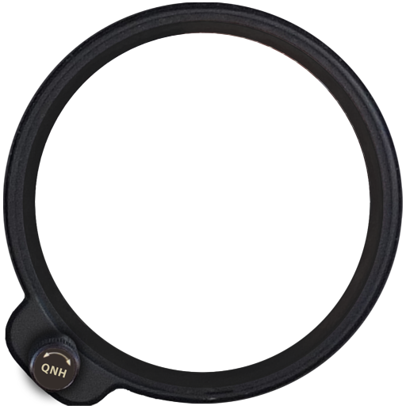

<!DOCTYPE html>
<html class="ui-mobile-rendering" xmlns="http://www.w3.org/1999/html">
    <head>
        <meta charset="utf-8"/>
        <title></title>

        <meta name="viewport" content="width=device-width, initial-scale=1, user-scalable=no">
        <meta name="apple-mobile-web-app-capable" content="yes" />

        <!-- The Scripts. All the js files and css stylesheets we are going to need -->
       <!-- <link type="text/css" rel="stylesheet" href="css/main.css">-->

        <!-- Keep in mind that the order of the scripts and stylesheets matters -->

        <script type="text/javascript" charset="utf-8" src="lib/fastclick.js"></script>
        <script type="text/javascript" charset="utf-8" src="lib/handlebars.js"></script>
        <script type="text/javascript" charset="utf-8" src="lib/underscore-min.js"></script>
        <script type="text/javascript" charset="utf-8" src="lib/jquery.js"></script>
        <script type="text/javascript" charset="utf-8" src="lib/jquery.json-2.3.min.js"></script>
        <script type="text/javascript" charset="utf-8" src="lib/backbone.js"></script>


        <!-- Platform -->
        <script type="text/javascript" charset="utf-8" src="../config.js"></script>
        <script type="text/javascript" charset="utf-8" src="../cordova.js"></script>

        <script type="text/javascript" charset="utf-8" src="js/language/en/language_en.js"></script>
        <script type="text/javascript" charset="utf-8" src="js/models.js"></script>
        <script type="text/javascript" charset="utf-8" src="js/view.js"></script>
        <script type="text/javascript" charset="utf-8" src="js/main.js"></script>
        <style>
            body{


            }
            .attitudeWrapper{
                width: 300px;
                height: 300px;
                background-image:url(https://raw.github.com/cannonerd/flowDrone/master/gauges/core/app/asset/img/bg.jpg);
                overflow: hidden;
            }
            .attitudemoving{
                position: absolute;
                top:0;
                left:0;
                width: 100%;
                height: auto;
            }
            .coverup{
                position: absolute;
                top:0;
                left:0;
                width: 100%;
            }
            .gaugeframebg {
                position: absolute;
                top:0;
                left:0;
                width: 100%;
            }
            .attitudestaticouter {
                position: absolute;
                top:0;
                left:0;
                width: 100%;
            }
            .attitudestatic {
                position: absolute;
                top:0;
                left:0;
                width: 100%;
            }

        </style>
        <!-- HOME VIEW -->
        <script type="text/x-handlebars-template" id="firstpage">

<!--

            <div class="compassWrapper">
                
                
                
            </div>
-->


            <div class="attitudeWrapper">
                
                
                
                
                
            </div>

          <!--  <div class="speedometerWrapper">
                
                
                
            </div>
            <div class="altitudeWrapper">
                
                
                
                
                
            </div>
            <div class="batteryWrapper">
                
                
                
            </div>
            -->

        </script>


   </head>

    <body>

        <div id="container"></div>
    </body>

</html>
